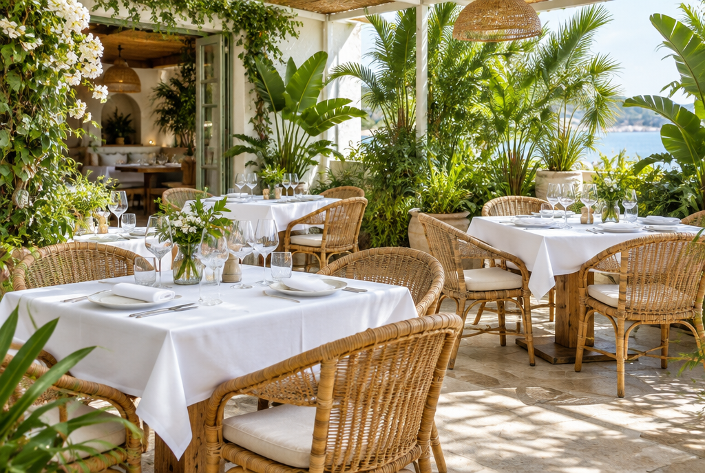

Varanda
Bistrô
Início
Cardápio
A casa
Eventos
Contato
Reservar mesa
Cozinha brasileira · almoço e jantar
Comida de casa,
mesa na
varanda.
Pratos do dia feitos com ingredientes frescos, num lugar arejado e cheio de verde.
Ver cardápio
Reservar mesa
Almoço
Ter a dom · 12h às 15h
Jantar
Qui a sáb · 19h às 23h
